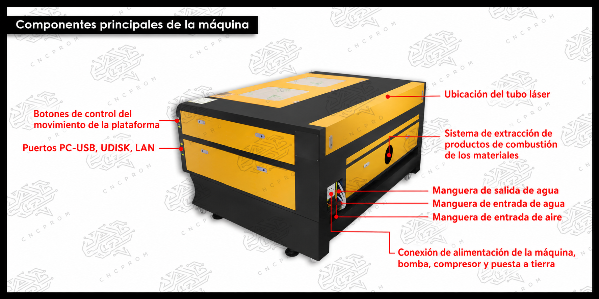
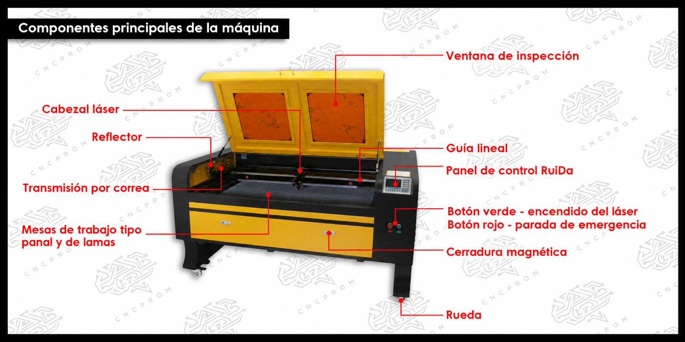
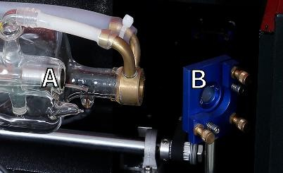
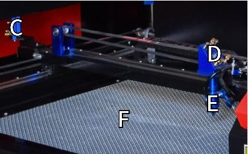
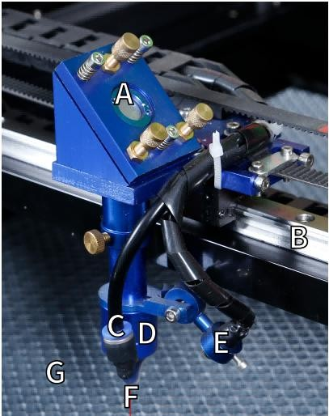

Descripción de componentes y sistema óptico




1. Descripción de la pieza
Ventana de visualización: Esta ventana de acrílico color canela le permite monitorear el proceso de grabado, pero absorbe solo parcialmente el láser infrarrojo alto y no tiene otra protección. Siempre use anteojos cuando utilice el láser activo de observación protectora y nunca lo mire fijamente durante períodos prolongados.
Guías del eje Y: Las guías del eje Y permiten que las guías del eje X se muevan hacia adelante y hacia atrás sobre la mesa.
Interruptor de enfriamiento de agua: después de activar el interruptor, el agua incorporada El enfriamiento comienza y la pantalla de temperatura en tiempo real se ilumina.
- Riel del eje X:
El riel del eje X sostiene el segundo espejo y soporta el Cabezal láser para mover hacia la izquierda y la derecha.
Puerta delantera recta: esta puerta se abre para permitir el paso de materiales más grandes.A través de la mesa de trabajo. Se debe tener mucho cuidado para evitar ver o sufrir por el rayo láser y sus reflejos.
Puerta de acceso frontal: esta puerta proporciona acceso al área debajo del Banco para fácil limpieza.
Toldo: La tapa proporciona acceso al soporte principal para colocar y recuperación de materiales, así como la alineación de la trayectoria del láser y otras tareas de mantenimiento. Cuando se abre la tapa, la energía del láser se corta automáticamente.
Panel de control: El panel de control proporciona control manual del proceso de grabado, incluido el movimiento del cabezal láser manual y la emisión del láser.
Interruptor principal: controla el interruptor de potencia total de toda la máquina.
Puertos de conexión: Estos puertos conectan la placa principal de la máquina de grabado al ordenador de control y a su software de grabado a travésde un cable USB o Ethernet.
Puerta de acceso derecha: esta puerta proporciona acceso a la placa base, al motor controladores y fuente de alimentación. Las rejillas de ventilación evitan que los componentes se sobrecalienten durante el uso y no deben estar obstruidas.
Interruptor de parada de emergencia: En caso de emergencia, este botón corta inmediatamente toda la energía al tubo láser.
Cabezal láser: El cabezal láser contiene el tercer espejo, la lente de enfoque y el punto rojo. Orientación y salida de asistencia de aire.
Mesa: La altura de la mesa se puede ajustar para adaptarse a superficies más delgadas y más gruesas. materiales, así como entre plataformas de aluminio y celulares.
Interruptor de control láser: este interruptor debe estar encendido cuando se utiliza un láser.
Interruptor de luz: Enciende la luz en el banco de trabajo.
Entrada de energía: este conector de alimentación debe estar conectado antes de usar el máquina.
Puerta de acceso trasera superior: esta puerta conduce al compartimento del láser donde se encuentra el láser. El tubo y sus conexiones están asegurados.
Puerta trasera: Esta puerta es el equivalente a una puerta delantera y requiere una puerta similar.
2. Descripción de la trayectoria del láser
Tubo láser : Este tubo de vidrio lleno de dióxido de carbono está montado sobre un soporte y no se puede mover. El voltaje de conexión entre él y la fuente de alimentación del láser es extremadamente alto y extremadamente peligroso.
Primer reflector: este espejo de ángulo ajustable se mantiene en su lugar para transferir el láser de grabado del tubo al segundo espejo.


Tubo láser y primer reflector.
Segundo espejo : Este espejo de ángulo ajustable se mueve a lo largo de la guía del eje X para permitir que el rayo láser se desplace a lo largo del eje Y.
Tercer espejo : Este espejo ajustable en ángulo se mueve con el cabezal del láser, lo que permite que el rayo láser se desplace a lo largo del eje X.
Lente de enfoque : esta lente dirige y enfoca la luz láser sobre el material.
Banco de trabajo : La altura del banco de trabajo expuesto se puede ajustar .


Segundo y tercer espejo, lente de enfoque y banco de trabajo.
3. Conjunto del cabezal láser
Tercer espejo del cabezal láser: este espejo con ángulo ajustable transmite la luz láser desde el segundo espejo a la lente de enfoque.
Guía del eje X: Esta guía se mueve a lo largo del eje Y, y su movimiento está controlado por un interruptor de límite.
Asistencia de aire: este dispositivo sopla aire presurizado para matar chispas y eliminar gases y residuos mientras se graba.
Lente de enfoque: esta lente dirige y enfoca el rayo láser hacia su punto de contacto con el material de grabado.
Puntero de punto rojo: este dispositivo le ayuda a ver la ubicación exacta del láser de grabado invisible.
Láser: El láser de grabado es invisible, pero muy peligroso. Evite el contacto directo con la piel o los ojos.
Banco de trabajo: Utilice las herramientas acrílicas proporcionadas para lograr el enfoque perfecto para cualquier espesor de material.


Conjunto del cabezal láser.